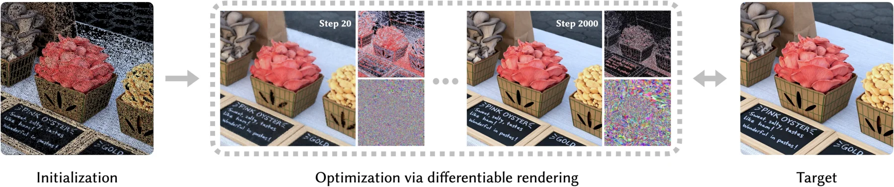

TL;DR
SAD represents an image as a soft, anisotropic, differentiable diagram over learnable sites. Each pixel is a softmax blend over its top-K nearby sites under a site-dependent distance, yielding a differentiable partition of unity with explicit ownership and content-aligned boundaries. A GPU-friendly top-K propagation scheme keeps cost constant per pixel, enabling fast fitting at matched or better quality.
Fitting Process
Each clip is a triple: RGB reconstruction, diagram view, and tau-position heatmap. It shows how sites migrate, temperatures sharpen, and the representation converges to content-aligned regions during optimization.
Method

We scatter many small sites across the image. Each site has a position, a color, a reach radius, an oriented anisotropic shape, and a temperature that controls boundary sharpness.
The pixel color is a soft blend of nearby sites. The temperature \(\tau_i\) controls how abruptly ownership changes between adjacent sites.
Because each pixel only depends on a fixed-size nearby-site list, both rendering and fitting remain GPU-friendly.
Comparisons
BibTeX
@article{iinbor2026sad,
title = {Soft Anisotropic Diagrams for Differentiable Image Representation},
author = {Iinbor, Laki and Dou, Zhiyang and Matusik, Wojciech},
journal = {ACM Transactions on Graphics},
year = {2026},
note = {SIGGRAPH 2026}
}